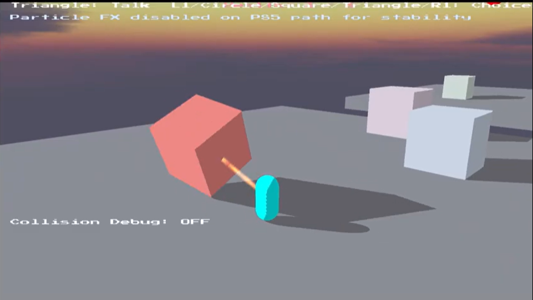
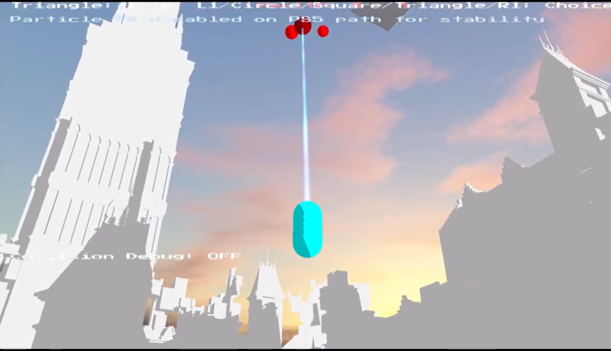

Push-Pull
A team-led C++ gameplay engineering project focused on traversal mechanics, level systems, UI flow, and structured game architecture.

Overview
Push-Pull is a team-led gameplay engineering project built around traversal mechanics, object interaction, and structured level progression. The project focused on implementing mechanic-driven gameplay inside a C++ codebase, with an emphasis on readability, level flow, and system integration.
My Role
I served as Team Lead for the project, helping organize development priorities, manage project structure, and guide implementation across gameplay, UI, and level design. Alongside leadership responsibilities, I contributed directly to core systems and helped shape the project into a connected multi-level experience.
Core Systems
- Traversal Mechanics: Built around push and pull interactions that directly shape player movement and spatial problem-solving.
- Level Progression System: Created the structure for connecting multiple levels together, including early level selection flow and progression control.
- UI Systems: Designed and implemented main menu, pause menu, debugging interfaces, and upgrades to user-facing control flow.
- Mechanic Polishing: Iterated on gameplay feel, interaction clarity, and overall responsiveness across the project.
Leadership & Production
As Team Lead, I managed organization, planning, and document/report structure while keeping development aligned across the team. This included coordinating weekly priorities, maintaining project clarity, and supporting communication between level design, gameplay implementation, and platform work.
Technical Highlights
- C++ Gameplay Development: Implemented mechanics and systems inside a structured game codebase.
- Level Architecture: Built systems to connect levels together and support progression through the project.
- UI & Debugging Tools: Added menu systems, debugging tools, and input behavior improvements.
- Platform Work: Contributed to early PlayStation SDK implementation as part of the broader project pipeline.
Design Challenges
A major challenge was balancing mechanic readability with technical structure. Push/pull interactions only work when player feedback is clear, so the project required careful iteration on controls, UI, and level presentation. At the same time, these systems had to fit cleanly into a larger team project with multiple contributors and evolving requirements.
Development Status
Push-Pull is a completed team project that demonstrates C++ gameplay engineering, systems integration, UI implementation, and technical leadership across a multi-level game experience.
Gameplay Screenshots


Additional development screenshots showing mechanic iteration, object interaction, and environmental variation across different stages of the project.